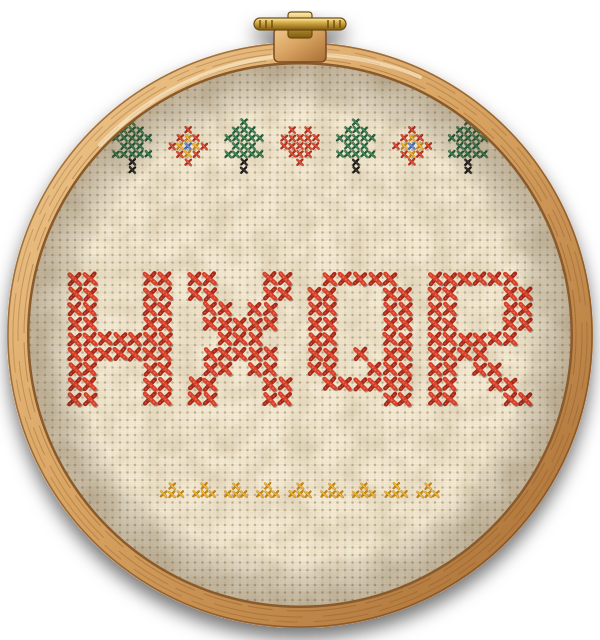
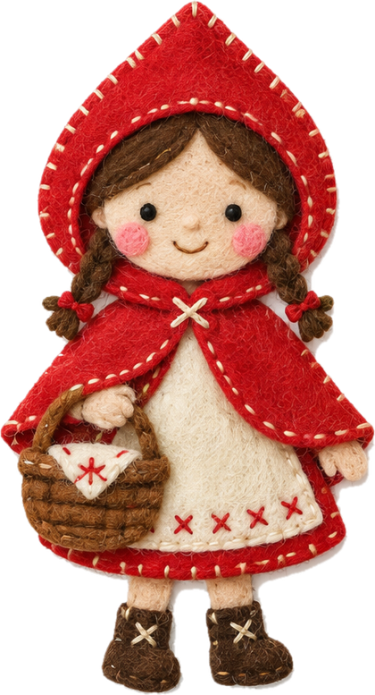
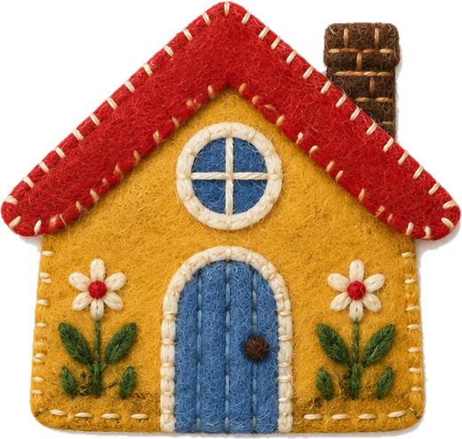

Body Double

Village code
bodydouble.tech/play/HXQR

Scan the patch, or type the code on your phone, to enter the village.

Scan to enter
Tale settings
- Chapters
- 6
- Answer time
- 60s
- Vote time
- 20s
- Demo mode
- off

Villagers who have arrived (5)

